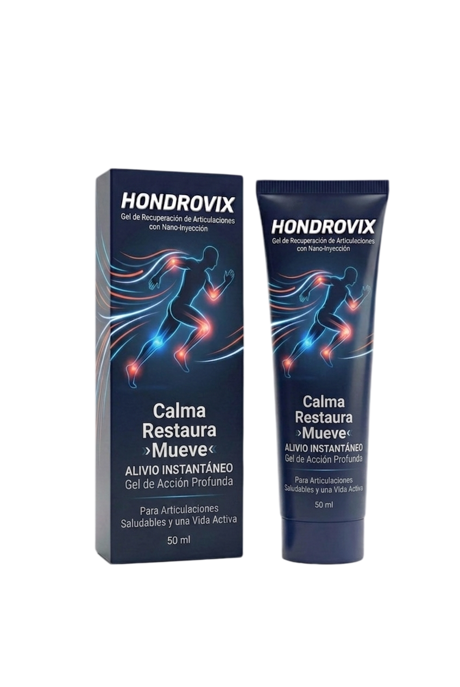

01
Caminar sin pensar todo el tiempo en las rodillas
Una vuelta por el mercado o una salida en familia debería ser un momento para disfrutar, no un recordatorio constante de las articulaciones.
¿Rodillas sensibles después de caminar? ¿Escaleras que se sienten más pesadas al final del día? Cuando las articulaciones llaman tu atención, hasta los planes sencillos pueden sentirse distintos. Hondrovix es un gel de masaje para el cuidado localizado de zonas como rodillas, manos, codos y hombros.

Precio claro: $590 MXN por unidad. Conoce las condiciones de entrega antes de confirmar tu compra.
No siempre se trata de un gran esfuerzo. A veces son las rodillas después de estar de pie, las manos tras una jornada de trabajo o los hombros al terminar el día. Son molestias que pueden robarle protagonismo a lo que de verdad quieres hacer.
Una vuelta por el mercado o una salida en familia debería ser un momento para disfrutar, no un recordatorio constante de las articulaciones.
Esas tareas pequeñas que se repiten todos los días pueden sentirse más pesadas cuando hay tensión o incomodidad al moverte.
Cuidar el jardín, caminar con tus hijos o salir con amigos: hay planes que no quieres dejar a un lado por una molestia.
Hondrovix es un gel de aplicación externa para masajear zonas articulares como rodillas, manos, codos y hombros. Su fórmula combina cuatro ingredientes botánicos usados en productos corporales de masaje. Es una opción de cuidado local para quienes buscan incorporar una pausa de masaje a su rutina, sin recurrir a cápsulas.
Se aplica directamente en la zona que deseas masajear; no es un suplemento oral.
Árnica y menta, junto con capsicum y eucalipto: una combinación botánica de sensaciones frescas y cálidas, según la sensibilidad de la piel.
Tubo de 50 ml: cómodo de mantener en casa y llevar contigo.
Conoce qué aporta cada ingrediente a la experiencia de aplicación. La fórmula es de uso externo y no sustituye la atención médica.
Planta utilizada tradicionalmente en preparados tópicos para masajear zonas que se sienten cargadas después de la actividad.
La menta aporta el perfil fresco y aromático que muchas personas buscan en un masaje corporal.
El capsicum puede producir una sensación cálida en la piel. Evita la piel irritada y prueba con precaución si eres sensible.
El eucalipto completa el perfil aromático de una aplicación de masaje localizada.
Las sensaciones de frescor o calor no equivalen a tratar una lesión. Los resultados pueden variar y el gel no reemplaza la atención profesional.
Después de trabajar, caminar o pasar tiempo de pie, un masaje localizado puede convertirse en un momento de autocuidado. Usa Hondrovix siempre conforme a las indicaciones de su envase.
Identifica la zona y lee la etiqueta.Comprueba la cantidad y la frecuencia de aplicación recomendadas en tu producto.
Masajea únicamente sobre piel intacta.No lo apliques sobre heridas, cerca de los ojos ni sobre mucosas. Lávate las manos después.
Respeta la sensación de tu piel.El capsicum puede generar calor. Suspende el uso ante irritación y evita fuentes de calor adicionales.
Si estás buscando un gel para masaje localizado de articulaciones, compara lo que realmente importa: qué es, qué contiene, cómo se utiliza y cuánto pagarás. Hondrovix reúne esa información en una sola presentación.
Precio por una presentación.
Un gel de masaje para zonas articulares, con árnica, menta, capsicum y eucalipto. Presentación de 50 ml por $590 MXN. Comparte tus datos para consultar disponibilidad y condiciones de envío antes de confirmar.
Para qué se usa, qué sensaciones puede producir y qué debes tener en cuenta antes de comprar.
Hondrovix es un gel tópico pensado para masaje localizado y cuidado corporal de zonas articulares, como rodillas, codos, manos y hombros. Contiene árnica, menta, capsicum y eucalipto. No es un medicamento acreditado para curar artritis, artrosis u otras enfermedades.
El precio de la presentación ofrecida es de $590 MXN. Los costos de envío, si corresponden, se informan antes de confirmar el pedido.
No hay evidencia clínica específica facilitada para afirmar que Hondrovix cure artritis, artrosis o regenere cartílago. Es un gel para masaje y cuidado externo; si el dolor persiste o limita el movimiento, consulta a un profesional de la salud.
Sigue las instrucciones reales del envase. Evita piel irritada, ojos y mucosas. Los extractos vegetales pueden causar irritación en personas sensibles.
No. Primero se verifican los datos, la disponibilidad y las condiciones de envío y pago. La compra se confirma después.